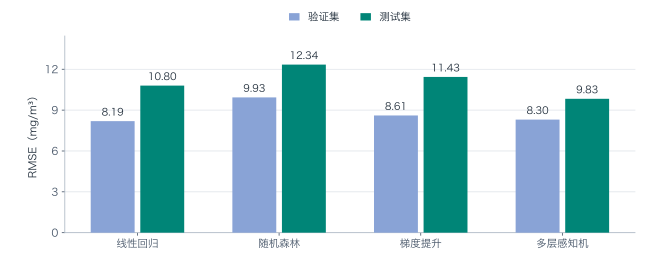
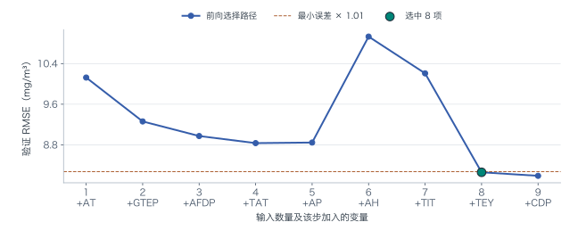
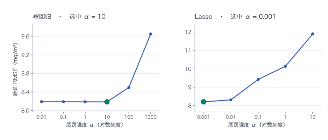
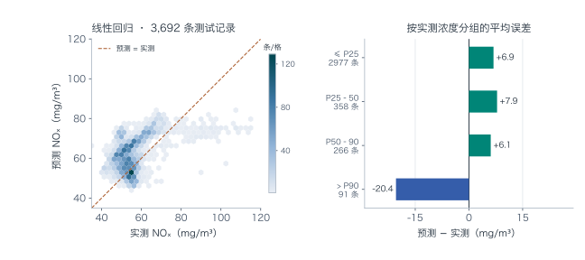

ME276DS / 课程项目276ds-group3 · 2026 秋研究摘要
燃气轮机 NOx 排放预测
用九项机组与环境读数估计每小时烟气浓度
模型比较、特征选择与正则化的实证研究
276ds-group3
Jiawei Xia · Rongqian Zhang · Bowen Xie · Zhuoqun Yang
后期数据改变了模型排名
电厂运行人员可以连续取得机组温度、压力和发电量等读数。若这些读数能准确估计氮氧化物（NOₓ）浓度，工程师就多了一项交叉检查排放监测信号的依据。本项目用一座电厂五年的观测记录检验这条思路。
36,733条小时聚合记录
9.831MLP 测试 RMSE，mg/m³
8 / 9前向选择保留的输入
四种主模型中，线性回归在验证段的均方根误差（RMSE）最低，为 8.190 mg/m³；进入更晚的测试段，其误差升至 10.799 mg/m³，MLP 排到首位。七个配置在测试段的决定系数 R² 均为负。一次验证排名难以代表之后的运行表现。
减少一个输入后，线性模型的测试 RMSE 为 10.658 mg/m³，精度与全输入模型接近。引入 Ridge 或 Lasso 惩罚也没有改善测试 RMSE。更值得工程人员关注的是，高浓度记录的误差有明确方向，线性模型在这组记录中平均低估 20.38 mg/m³。
报告与可复现材料
可视化网站（含课堂展示） https://me276ds-turbine-nox.vigilantdrape.chatgpt.site
项目代码与结果（私有仓库） https://github.com/HARROLDX/me276ds-gas-turbine-nox
UC Berkeley · Statistics and Data Science for Engineers · 2026 年秋季
实验与报告日期 2026 年 11 月 5 日
ME276DS / 课程项目276ds-group3 · 2026 秋数据与场景
一个小时怎样成为一个样本
每一行来自土耳其西北部同一座电厂的一小时聚合观测。九项运行与环境读数组成输入向量 x，同一行实测的 NOX 是目标 y，单位为毫克每立方米（mg/m³）。现场应用设定是在这些读数已到齐时估计同期浓度，供运行人员和环境监测工程师复核。
| 输入字段 | 读数的含义 | 单位（UCI 原表） |
|---|
| AT / AP / AH | 环境温度 / 环境压力 / 相对湿度 | °C / mbar / % |
| AFDP / GTEP | 空气过滤器压差 / 燃气轮机排气压力 | mbar / mbar |
| TIT / TAT | 涡轮入口温度 / 涡轮后温度 | °C / °C |
| TEY / CDP | 涡轮发电量 / 压气机排气压力 | MWh / mbar* |
* CDP 保留 UCI 标注及原始数值。CO 属于同时测得的另一项排放量，排除在输入之外。年份、行号仅用于分区与核对。
给模型过去的数据，用随后两段记录检验它
| 用途 | 原始记录与边界 | 条数 | NOₓ 均值 | 标准差¹ |
|---|
| 训练 | 2011–2014 全部 | 29,349 | 66.652 | 11.416 |
| 验证 | 2015 第 1–3,692 条 | 3,692 | 64.163 | 11.633 |
| 测试 | 2015 第 3,693–7,384 条 | 3,692 | 55.618 | 8.717 |
¹ 两列均以 mg/m³ 计，标准差按所属分区总体计算。表中测试集描述统计在配置冻结、最终评估完成后计算。
UCI 提供按时间排序的五份 CSV，合计 2.78 MB，每份 11 个原始数值列。校验文件哈希、列名及有限性后，36,733 行均完整。2014 年存在 7 条与同年先前记录完全相同的测量行；由于没有事件标识可判断采集错误，保留全部观测。
划分依据 课题组采用 2011–2014 年训练、2015 年按行数等分验证和测试。原研究建议前三年开发、后两年测试，二者的分数不宜直接比较。数据隐去了具体时间戳，因此“前半、后半”指可用记录的顺序。
训练段负责学习系数、树结构及标准化参数。验证段负责选超参数和传感器。随后冻结配置，仍只在训练段重新拟合，再对测试段评分一次。三项实验共用相同的样本和随机种子 276。
ME276DS / 课程项目276ds-group3 · 2026 秋数学方法
从读数到预测，从预测到误差
设有 n 条训练记录，第 i 条的第 j 个读数记作 xij。线性模型和 MLP 先用训练均值 μj 和标准差 sj 将各量转换到可比的尺度，树模型直接使用原读数。
zij = (xij − μj)/sj ŷi = b + Σj wj zij
对于普通最小二乘（OLS），取使训练平方误差和 Σi(yi − ŷi)² 最小的截距 b 和系数 w。例如系数 wAT 表示其余输入固定、环境温度升高一个训练标准差时，预测浓度的变化。
| 方法 | 怎样学习 | 怎样得到一条预测 |
|---|
| OLS | 拟合截距和九个斜率 | 将标准化读数加权求和 |
| 随机森林 | 对自助抽样的训练行分别建回归树；按读数阈值划分叶节点 | 取各树叶节点预测的平均 |
| 梯度提升 | 从常数预测起步，依次用浅树拟合上一轮平方损失的残差 | 前一轮预测加学习率乘新树输出 |
| MLP | 在隐藏层用 ReLU 引入非线性，用 Adam 更新权重 | 隐藏层加权、激活，输出层给出连续预测；还原目标浓度单位 |
随机森林 ŷ = (1/B) Σb Tb(x)
梯度提升 Fm(x) = Fm−1(x) + η Tm(x)
单隐藏层 MLP ŷ标准化 = vᵀ ReLU(Wz + a) + c
T 表示一棵树，B 是树的数量，η 是每轮提升的学习率。ReLU(t) = max(0, t)，W、v 与偏置 a、c 由训练数据学习。
怎样读懂三个指标
ei = ŷi − yi MAE = Σi|ei| / n RMSE = √(Σi ei² / n)
在某个评分分区上，n 改指该分区记录数。MAE 回答“一条记录平均差多少”，RMSE 对较大偏差更敏感，两者均越小越好。工程人员关心大幅偏差，因此预先以验证 RMSE 排序，同时报告容易解释的 MAE。
R² = 1 − Σi ei² / Σi (yi − ȳ)²
ȳ 取对应评分分区的实测均值。R² = 1 表示完全吻合，R² = 0 表示平方误差等于用该分区均值恒定预测的误差。R² 小于零意味着平方误差超过这个参照。测试第一条记录实测 47.816、OLS 预测 49.959，故误差为 +2.143 mg/m³，正号表示高估。
ME276DS / 课程项目276ds-group3 · 2026 秋实验一 · 四模型比较
训练拟合度与后期预测能力
| 模型 | 训练 RMSE | 验证 RMSE | 测试 RMSE | 测试 MAE | 测试 R² | 拟合秒数 |
|---|
| 线性回归 OLS | 7.980 | 8.190 | 10.799 | 9.004 | -0.534 | 0.03 |
| 随机森林 RF | 3.102 | 9.934 | 12.343 | 10.481 | -1.005 | 33.67 |
| 梯度提升 GBT | 5.849 | 8.609 | 11.434 | 10.095 | -0.720 | 6.43 |
| 神经网络 MLP | 4.742 | 8.304 | 9.831 | 8.039 | -0.272 | 7.60 |
误差单位均为 mg/m³。拟合秒数来自 A6000 主机上的单线程 CPU 最终重拟合，只用于了解本次运行规模。R² 无量纲。

图 1 每种方法先按验证 RMSE 固定设置，再比较后期测试误差。验证选 OLS，测试 MLP 误差最低。 MLP 测试 RMSE 相比 OLS 降低 8.96%，但其测试 R² 为 −0.272。该排名是最终观测结果；实际在测试之前作出的主模型选择是 OLS。
随机森林在训练集上的 RMSE 仅 3.102，验证集升至 9.934，测试集进一步升至 12.343。它能很好地拟合训练样本，却未能把这一优势带到后期记录。训练与验证误差的差距同时受到模型复杂度和时期变化影响。
选中的设置与复杂度
OLS 使用 9 个斜率和 1 个截距。随机森林使用 200 棵树，最大深度 12，每叶至少 1 条训练记录。梯度提升使用 100 棵深度上限为 3 的树，学习率 0.05。MLP 使用 32 个隐藏单元（353 个权重和偏置），L2 系数 0.01、学习率 0.001，实际优化 182 轮。所有候选与最终拟合均未报告收敛警告。
ME276DS / 课程项目276ds-group3 · 2026 秋实验二 · 前向选择
减少一个传感器的代价
固定使用 OLS，先从空集合出发，每轮分别尝试加入一个剩余输入。各候选只在训练集上拟合，保留使验证 RMSE 最低的加入方式。九轮共考察 9 + 8 + … + 1 = 45 个候选。为兼顾输入数量，预先规定选择距离路径最优验证误差 1% 以内的最小子集。

图 2 一个点代表该规模下贪心选择保留的特征组合。水平虚线标出路径最优验证误差的 1.01 倍，圆点标出所选的八输入模型。| 配置 | 输入数 | 验证 RMSE | 测试 MAE | 测试 RMSE | 测试 R² |
|---|
| 完整 OLS | 9 | 8.190 | 9.004 | 10.799 | −0.534 |
| 前向选择 OLS | 8 | 8.259 | 8.878 | 10.658 | −0.495 |
选入顺序 AT → GTEP → AFDP → TAT → AP → AH → TIT → TEY，最后一个候选是 CDP。最优验证 RMSE 为 8.190，1% 上界约 8.272；八输入模型以 8.259 进入范围，七输入模型为 10.208。加入变量后训练最小平方误差可以下降，但验证误差可能上升，图中的中段起伏体现了这一点。
省去 CDP 后测试 RMSE 比九输入低 0.140 mg/m³。训练集中 CDP 与 GTEP 的样本相关系数为 0.992，与 TEY 为 0.988，已有输入携带相近的信息。这支持“在本电厂的 OLS 估计中可尝试减少一项读数”；选型过程没有建立拆除物理传感器的工程依据。
ME276DS / 课程项目276ds-group3 · 2026 秋实验三 · 正则化
收缩系数能否改善跨年误差
运行读数高度相关时，多个斜率可以相互抵消，令系数解释变得不稳定。Ridge 和 Lasso 在训练损失上增加惩罚项，截距不受惩罚。下式采用本项目 scikit-learn 实现的尺度，n 为训练样本数。
Ridge minb,w Σi ei² + α Σj wj²
Lasso minb,w (1/2n) Σi ei² + α Σj |wj|
α 越大，系数收缩越强。Ridge 平滑地缩小系数，Lasso 可以将部分系数压为零。两种损失采用不同归一化，应在各自的参数网格内比较 α。

图 3 每个点为一个预设惩罚强度的验证结果。最终对各自验证误差最低的 α 报告测试表现。| 模型 | α | 非零斜率 | 验证 RMSE | 测试 MAE | 测试 RMSE | 测试 R² |
|---|
| OLS | — | 9 | 8.190 | 9.004 | 10.799 | −0.534 |
| Ridge | 10 | 9 | 8.187 | 9.091 | 10.884 | −0.559 |
| Lasso | 0.001 | 9 | 8.202 | 9.006 | 10.799 | −0.535 |
以发电量 TEY 为例，每增加一个训练标准差，对应标准化输入系数从 OLS 的 −27.04 变为 Ridge 的 −24.06 mg/m³。Ridge 确实收缩了系数，验证收益却只有 0.003 mg/m³，测试误差略增。Lasso 选中最弱惩罚，保留全部 9 个系数；若把 α 增至 1，仅剩 3 个非零斜率，验证误差升至 10.141。允许系数为零，并不保证最优预测使用更少输入。
ME276DS / 课程项目276ds-group3 · 2026 秋误差诊断
平均高估掩盖了高浓度低估
以下诊断固定使用验证阶段选出的九输入 OLS。测试实测均值为 55.618 mg/m³，预测均值为 61.846 mg/m³。平均偏差（预测减实测）为 +6.228 mg/m³，但这不能描述每一种工况。

图 4 左图比较实测与预测，沿对角线表示一致；右图用训练浓度分位点分组，显示各组平均偏差。| 按实测 NOₓ 分组¹ | 测试条数 | 实测均值 | 预测均值 | 平均偏差 |
|---|
| ≤ 59.298 | 2,977 | 52.490 | 59.349 | +6.859 |
| (59.298, 64.964] | 358 | 61.891 | 69.746 | +7.854 |
| (64.964, 80.8916] | 266 | 68.929 | 75.014 | +6.085 |
| > 80.8916 | 91 | 94.350 | 73.967 | −20.383 |
¹ 浓度和偏差的单位为 mg/m³。分界点取训练集第 25、50、90 百分位；按实测值分组用于事后诊断。
测试段 91 条高浓度记录全部被低估。对关心排放峰值的工程师而言，即使多数低浓度记录被高估，也无法抵消对峰值的一致漏估。这个分位阈值用于研究诊断，不代表法规限值。
负 R² 从哪里来？ 测试浓度标准差只有 8.717 mg/m³，这也等于事后知道测试均值并恒定输出它的 RMSE。最低模型误差 9.831 仍大于 8.717，故所有测试 R² 均为负。若改以训练均值 66.652 作可实际部署的常数预测，测试 RMSE 为 14.063；模型仍从传感器读数中提取了有用信息。
ME276DS / 课程项目276ds-group3 · 2026 秋结论与复现
工程取舍与证据边界
对运行团队的建议。 若要解释输入与估计值的关系，九输入 OLS 是验证阶段支持的起点；缺少 CDP 时，八输入 OLS 在本次后期记录中保持了相近精度。若目标是减少本次测试段的总体误差，MLP 的观测结果最优，但需要在新的独立时段重新验证该优势。对高排放峰值的监测仍应依靠实测仪表。
适用范围。 数据仅来自一座电厂。训练、验证、测试的环境温度均值依次为 17.84、14.67、19.78 °C，NOₓ 浓度均值也在变化。工况差异与误差变化同时出现，仅凭这些记录无法判定温度、设备老化或控制策略中的哪一项导致误差。相邻小时还可能相关，单一后期测试段不支持跨厂推广或独立同分布的显著性推断。
复现实验
训练版本 051ef77，Python 3.12.3，scikit-learn 1.7.2。随机种子 276，CPU 单线程。开发阶段 28 个全输入候选加 45 个前向候选，共 73 次拟合；随后 7 个冻结配置在相同 29,349 条训练记录上重拟合。测试集只用于一次正式评分。最终交付根据 3,692 行存档预测独立复算全部指标。
| 模型族 | 预设验证搜索范围 |
|---|
| OLS / 随机森林 | OLS 无超参数；森林 200 棵，最大深度 {不限,12}，最小叶样本 {1,5} |
| 梯度提升 | 树数 {100,300} × 学习率 {0.05,0.1} × 深度 {2,3} |
| MLP | 隐藏层 {32,(64,32)} × α {0.0001,0.01}；最多 500 轮 |
| Ridge / Lasso | Ridge α ∈ {0.01,0.1,1,10,100,1000}；Lasso α ∈ {0.001,0.01,0.1,1,10} |
仓库 configs/experiments.json 固定参数网格，results/final-s276/ 包含候选分数、冻结配置、逐条预测及运行记录。README 提供环境安装、数据校验与重现命令。网站的“逐条预测”可查看任意连续 80 条测试记录的误差。
资料与入口